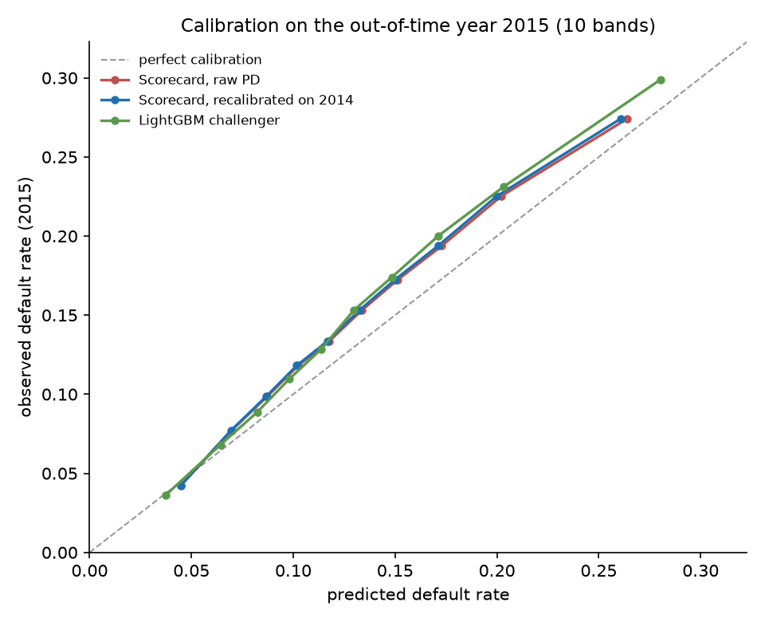
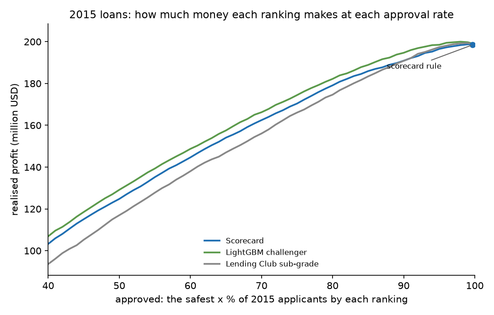
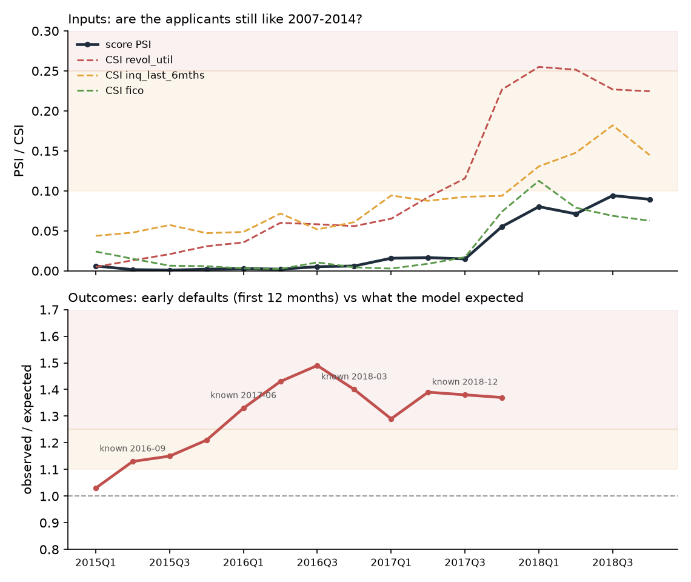

Score a loan application the way a lender would
A points scorecard trained on 338,000 Lending Club loans from 2007 to 2014. Change an answer and watch the points add up: every decision comes with the reasons behind it. A portfolio project, not for real lending decisions.
Score slip
Points for each answer, out of the best possible. Red lines are the main reasons.Loading the scorecard…
- Chance of default within 3 years
- –
- Interest rate that covers expected losses
- – Losses only: a lender adds funding and running costs on top.
600 points mean odds of 50 to 1 against default; every 20 points double the odds. In 2016–17 real early defaults ran up to 1.5 times this model's estimate: see the monitoring below.
Tested on a year it never saw
On 283,026 loans from 2015, the scorecard ranks risk with a Gini of 0.30. A LightGBM challenger reaches 0.34, and Lending Club's own grade, built with the full credit report, 0.36. All three predicted too few defaults in 2015: the ranking held, the level drifted.
| 2015 loans | Gini | predicted defaults |
|---|---|---|
| Lending Club grade | 0.357 | 12.8 % |
| LightGBM challenger | 0.343 | 13.3 % |
| This scorecard | 0.303 | 13.5 % |
| Actual | 14.9 % |

Where the score is worth money
At Lending Club's prices almost every approved loan was worth funding, so a profit rule declines under 1 %. The ranking pays when choosing which loans to fund: an investor funding half of the 2015 loans by this scorecard earned 6.29 % on money lent, against 6.09 % picking Lending Club's best grades.

Monitoring caught what stable inputs hid
After go-live the applicants looked unchanged for two years, with a score PSI of at most 0.006. Early defaults still rose to 1.49 times the model's estimate, a red light visible from June 2017. Input stability is not model health.
